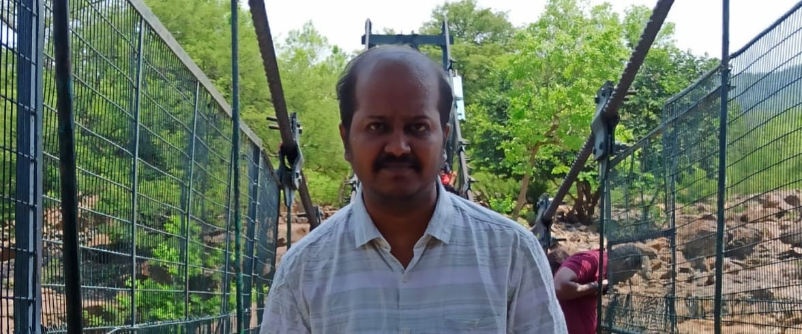
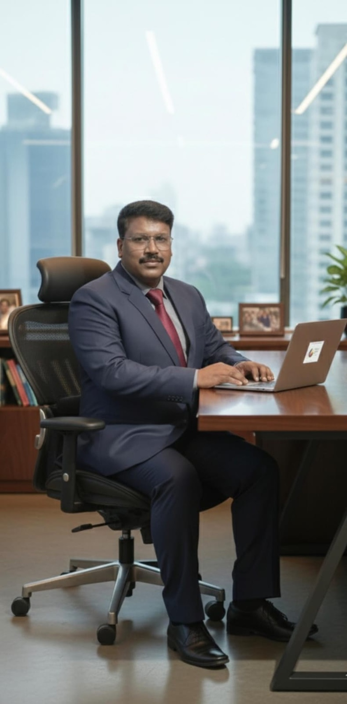

Saravanan Narasimhan
Founding Joint Owner
 Franchises
FranchisesFRANCHISE 07 · SEASON 1
Heritage, discipline and opportunity—built into one professionally managed youth-cricket franchise.
FOUNDING JOINT OWNERS

Founding Joint Owner

Founding Joint Owner · Finance Manager at Atos · 20+ years of experience
ABOUT THE OWNERS
Saravanan Narasimhan and Santhana Krishnan are the Founding Joint Owners of Thanjavur Royals, united by a shared vision of nurturing young cricketing talent and building a professionally managed franchise within TNYPL.
Bringing together business leadership and corporate-finance experience, they are committed to an environment where young athletes can develop their skills, compete with confidence and grow on and off the field.
Saravanan brings a passion for leadership, community engagement and youth development. Santhana, a Finance Manager at Atos with more than 20 years of corporate experience, contributes financial discipline, governance and strategic planning.
JOINT VISION
“We aspire to create a platform where talented young cricketers are empowered to dream bigger, develop their potential and represent their communities with pride. Through professional management, strong values and commitment to excellence, we aim to make Thanjavur Royals a benchmark TNYPL franchise.”